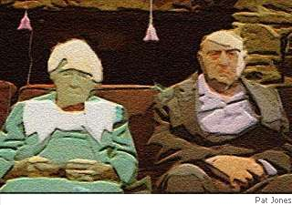

Janet Kenny
Daft
If I go daft before you Dear,
please read to me and prop me up
to see the sea, and share a cup
of coffee, strong, and stay as near
as bearable before I gape
into white space and start to stink.
That’s when to leave my side I think.
When I am just a dribbling shape.
I’ll stay with you if you tip first,
and play the music you like most,
and make bruschetta things, or toast.
I’ll read you Wodehouse, quench your thirst.
I’ll show you parrots, pour you wine,
watch Monty Python or Totò
as smiling you’ll forget you know
a face that once you knew was mine.
If we go daft together we
will die like fools without a clue.
You won’t help me, I won’t help you.
We’ll blunder independently,
we’ll shut us out, or lock us in,
set us on fire, or lose ourselves
behind the supermarket shelves,
each imbecile the other’s twin.

Janet Kenny has metamorphosed from painter to classical singer to anti-nuclear activist, researcher, writer, illustrator and poet. Started in New Zealand and zigzagged across the globe to finally settle in Australia. She has published fairly widely as a poet. Some of her poetry can be found at her website http://janetkenny.netpublish.net/.
|